פשוט להצליח במתמטיקה › כל הנושאים › שאלון 472
4 יחידות – שאלון 472 (35472) – סרטוני הסבר לפי נושא
כל סרטוני ההסבר במתמטיקה לשאלון 472 – 159 סרטונים לפי הנושאים בתוכנית הלימודים: סדרות ואינדוקציה, גדילה ודעיכה, טריגונומטריה במרחב, פונקציות מעריכיות ו-ln, אינטגרלים, וקטורים. מתאים לכיתות י״ב ולהכנה לבגרות.
📝 בחינות בגרות קודמות עם פתרונות: שאלון 35472 – כל המועדים
סדרות ואינדוקציה (15) לכל הסרטונים בנושא ←
 סדרה הנדסית – 4 מספרים: מכפלה וסכום
סדרה הנדסית – 4 מספרים: מכפלה וסכום סדרה הנדסית – הפרש בין איברים, מציאת המנה
סדרה הנדסית – הפרש בין איברים, מציאת המנה סדרות הנדסיות וחשבוניות שאלות בגרות נדירות 4 יח 1
סדרות הנדסיות וחשבוניות שאלות בגרות נדירות 4 יח 1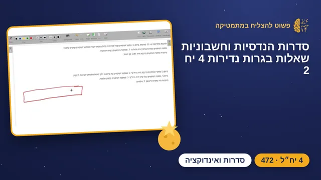
סדרות הנדסיות וחשבוניות שאלות בגרות נדירות 4 יח 2 סדרות הנדסיות וחשבוניות שאלות בגרות נדירות 4 יח 3
סדרות הנדסיות וחשבוניות שאלות בגרות נדירות 4 יח 3 שאלות בגרות 4 יח כיתה יב סדרה חשבונית 2
שאלות בגרות 4 יח כיתה יב סדרה חשבונית 2 איך מוכיחים סדרה חשבונית
איך מוכיחים סדרה חשבונית סכום סדרה חשבונית 4 5 יח
סכום סדרה חשבונית 4 5 יח שאלות בגרות 4 יח כיתה יב סדרה חשבונית 1
שאלות בגרות 4 יח כיתה יב סדרה חשבונית 1 הסבר סדרה חשבונית – מהות ונשמה 4 5 יח
הסבר סדרה חשבונית – מהות ונשמה 4 5 יח שאלת בגרות סדרה חשבונית 805 482
שאלת בגרות סדרה חשבונית 805 482 סדרה חשבונית – כללי יסוד כולל סכום 805 482
סדרה חשבונית – כללי יסוד כולל סכום 805 482 סדרה חשבונית וסדרה הנדסית – שאלת בגרות ל-4 ו-5 יח
סדרה חשבונית וסדרה הנדסית – שאלת בגרות ל-4 ו-5 יח סדרה חשבונית ל-4 ו-5 יח – שאלת בגרות קטלנית
סדרה חשבונית ל-4 ו-5 יח – שאלת בגרות קטלנית סדרות 482 שאלת בגרות מדהימה
סדרות 482 שאלת בגרות מדהימהגדילה ודעיכה (8) לכל הסרטונים בנושא ←
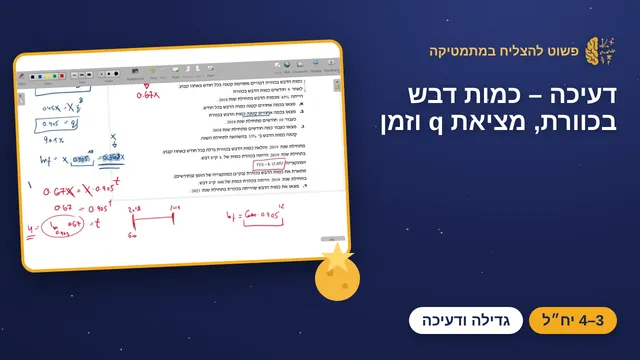
דעיכה – כמות דבש בכוורת, מציאת q וזמן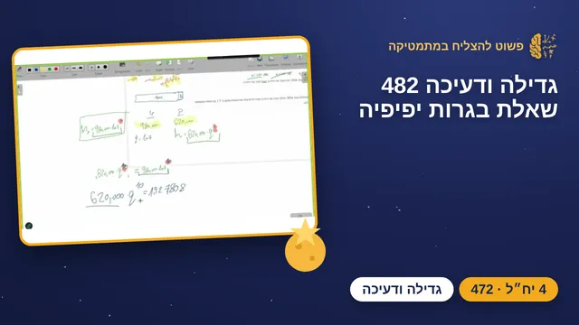
גדילה ודעיכה 482 שאלת בגרות יפיפיה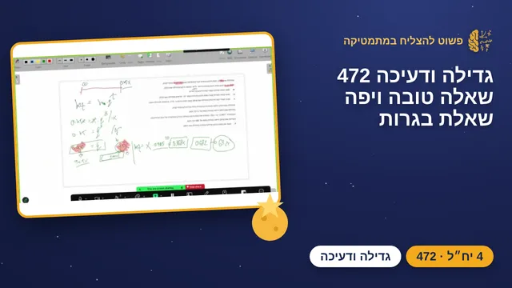
גדילה ודעיכה 472 שאלה טובה ויפה שאלת בגרות שאלת בגרות גדילה ודעיכה שאלה מקסימה ויפה 482
שאלת בגרות גדילה ודעיכה שאלה מקסימה ויפה 482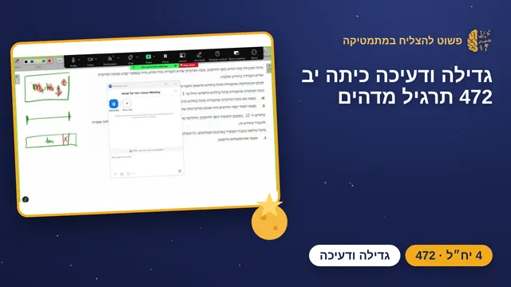
גדילה ודעיכה כיתה יב 472 תרגיל מדהים תרגילי בגרות גדילה ודעיכה שאלון 472 4 יח 2
תרגילי בגרות גדילה ודעיכה שאלון 472 4 יח 2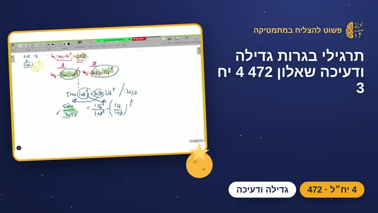
תרגילי בגרות גדילה ודעיכה שאלון 472 4 יח 3תרגילי בגרות גדילה ודעיכה שאלון 472 4 יח 1טריגונומטריה במרחב (41) לכל הסרטונים בנושא ←
 טריגונומטריה במרחב – פירמידה ריבועית, הסבר בסיסי
טריגונומטריה במרחב – פירמידה ריבועית, הסבר בסיסי טריגונומטריה במרחב – פירמידה משולשת ישרה
טריגונומטריה במרחב – פירמידה משולשת ישרה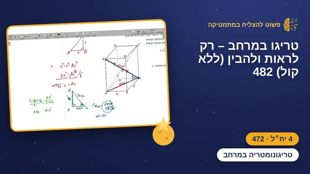
טריגו במרחב – רק לראות ולהבין (ללא קול) 482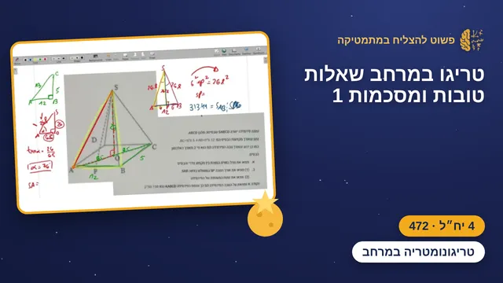
טריגו במרחב שאלות טובות ומסכמות 1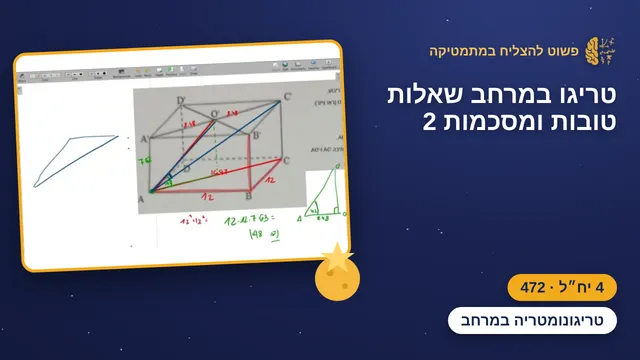
טריגו במרחב שאלות טובות ומסכמות 2 טריגו במרחב שאלות בגרות 482 1
טריגו במרחב שאלות בגרות 482 1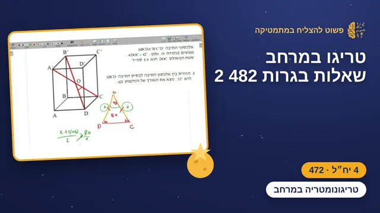
טריגו במרחב שאלות בגרות 482 2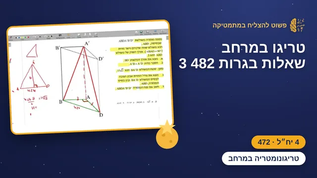
טריגו במרחב שאלות בגרות 482 3 טריגו במרחב מהבסיס עד רמת בגרות שאלון 482 – 7
טריגו במרחב מהבסיס עד רמת בגרות שאלון 482 – 7 טריגו במרחב מהבסיס עד רמת בגרות שאלון 482 – 6
טריגו במרחב מהבסיס עד רמת בגרות שאלון 482 – 6 טריגו במרחב מהבסיס עד רמת בגרות שאלון 482 – 8
טריגו במרחב מהבסיס עד רמת בגרות שאלון 482 – 8 טריגו במרחב מהבסיס עד רמת בגרות שאלון 482 – 9
טריגו במרחב מהבסיס עד רמת בגרות שאלון 482 – 9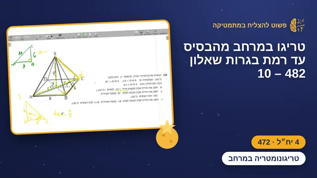
טריגו במרחב מהבסיס עד רמת בגרות שאלון 482 – 10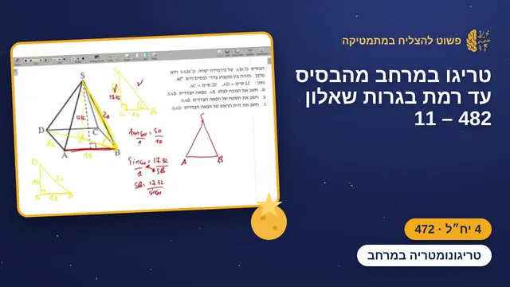
טריגו במרחב מהבסיס עד רמת בגרות שאלון 482 – 11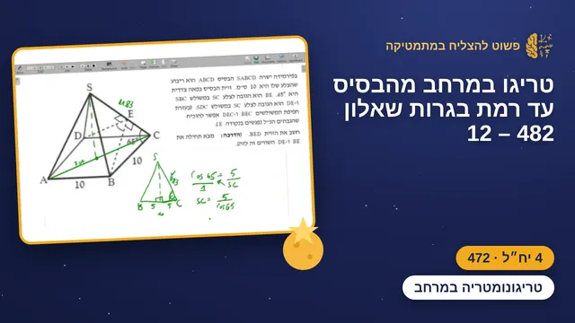
טריגו במרחב מהבסיס עד רמת בגרות שאלון 482 – 12 טריגו במרחב מהבסיס עד רמת בגרות שאלון 482 – 5
טריגו במרחב מהבסיס עד רמת בגרות שאלון 482 – 5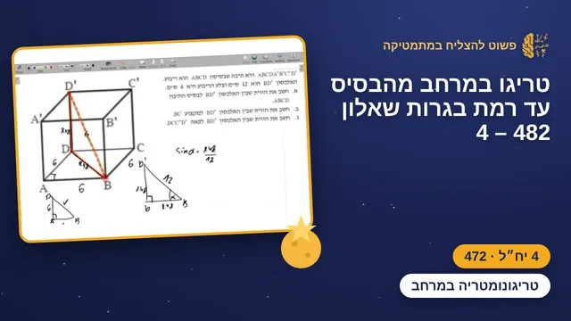
טריגו במרחב מהבסיס עד רמת בגרות שאלון 482 – 4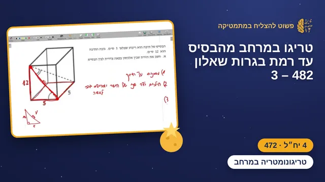
טריגו במרחב מהבסיס עד רמת בגרות שאלון 482 – 3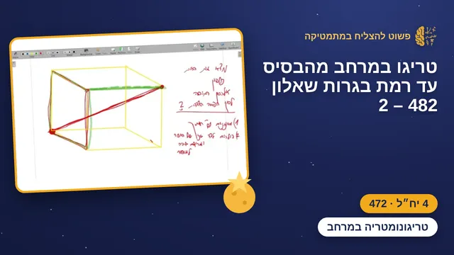
טריגו במרחב מהבסיס עד רמת בגרות שאלון 482 – 2 טריגו במרחב מהבסיס עד רמת בגרות שאלון 482 – 1
טריגו במרחב מהבסיס עד רמת בגרות שאלון 482 – 1 טריגונומטריה במרחב – הסבר כל החומר כולל פירמידות משולשות 482
טריגונומטריה במרחב – הסבר כל החומר כולל פירמידות משולשות 482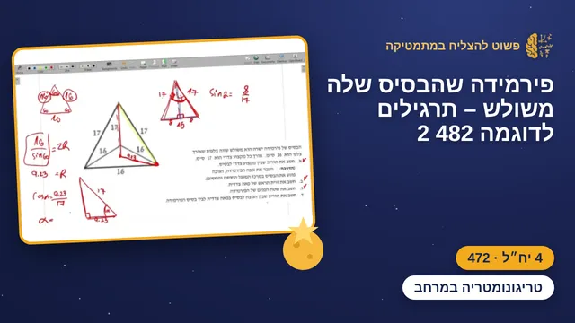
פירמידה שהבסיס שלה משולש – תרגילים לדוגמה 482 2 פירמידה שהבסיס שלה משולש – תרגילים לדוגמה 482 1
פירמידה שהבסיס שלה משולש – תרגילים לדוגמה 482 1 טריגו במרחב – פירמידה 482 כיתה יב 4 יח
טריגו במרחב – פירמידה 482 כיתה יב 4 יח טריגו במרחב 482 כיתה יב 4 יח
טריגו במרחב 482 כיתה יב 4 יח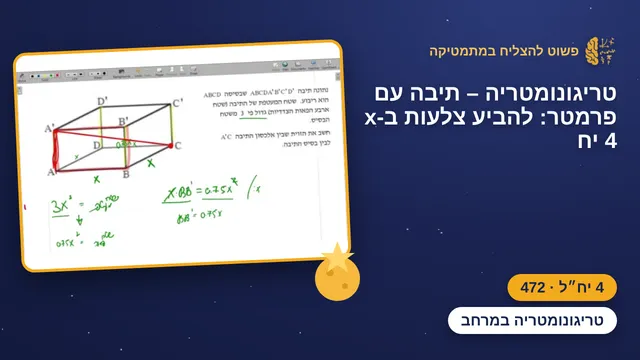
טריגונומטריה – תיבה עם פרמטר: להביע צלעות ב-x 4 יח טריגונומטריה במרחב פירמידה – שאלה פצצה 482 4 יח
טריגונומטריה במרחב פירמידה – שאלה פצצה 482 4 יח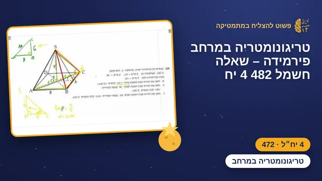
טריגונומטריה במרחב פירמידה – שאלה חשמל 482 4 יח טריגונומטריה במרחב – הסבר פירמידה שבסיסה ריבוע או מלבן עם כל הטריקים
טריגונומטריה במרחב – הסבר פירמידה שבסיסה ריבוע או מלבן עם כל הטריקים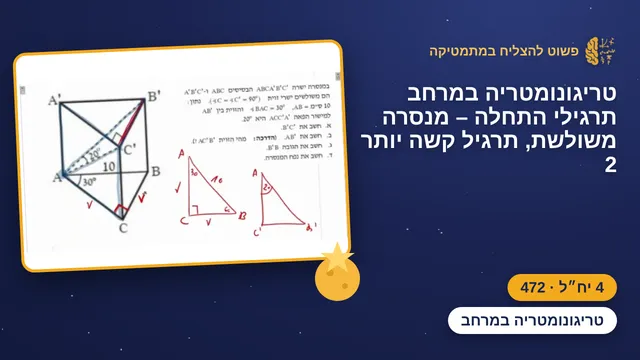
טריגונומטריה במרחב תרגילי התחלה – מנסרה משולשת, תרגיל קשה יותר 2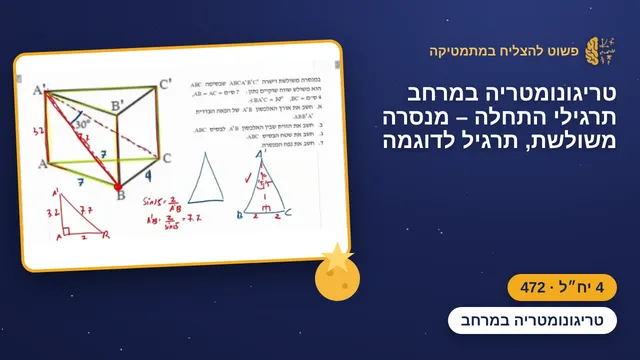
טריגונומטריה במרחב תרגילי התחלה – מנסרה משולשת, תרגיל לדוגמה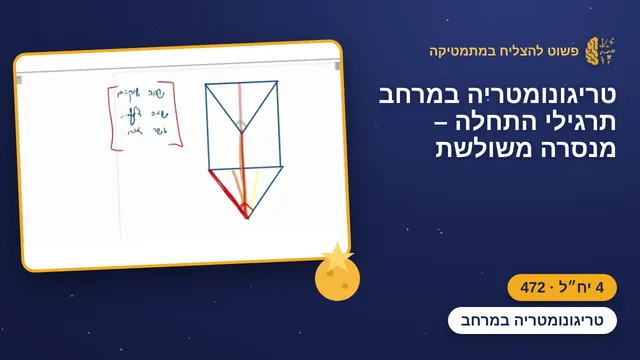
טריגונומטריה במרחב תרגילי התחלה – מנסרה משולשת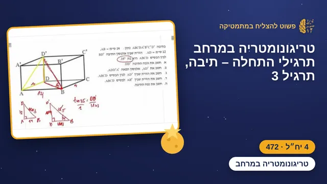
טריגונומטריה במרחב תרגילי התחלה – תיבה, תרגיל 3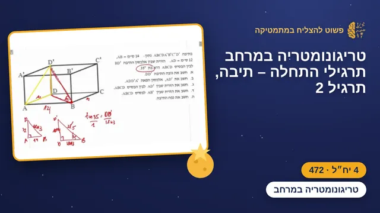
טריגונומטריה במרחב תרגילי התחלה – תיבה, תרגיל 2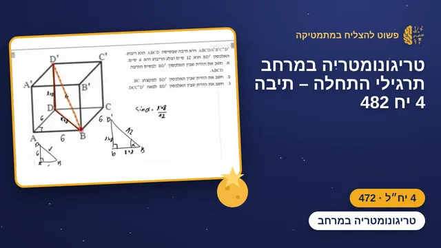
טריגונומטריה במרחב תרגילי התחלה – תיבה 4 יח 482טריגונומטריה במרחב שאלת בגרות 4 יח 482 805 – תיבה טריגו במרחב – שאלה ברמה גבוהה 482 תיבה
טריגו במרחב – שאלה ברמה גבוהה 482 תיבה טריגו במרחב פירמידה 482 – שאלת בגרות 2015 מועד ב
טריגו במרחב פירמידה 482 – שאלת בגרות 2015 מועד ב חורף 2017 שאלה 2 – טריגו במרחב 482
חורף 2017 שאלה 2 – טריגו במרחב 482 קיץ 2022 מועד ב – טריגו במרחב שאלה 2 482חורף 2022 מועד א – טריגו במרחב שאלה 2 482
קיץ 2022 מועד ב – טריגו במרחב שאלה 2 482חורף 2022 מועד א – טריגו במרחב שאלה 2 482פונקציות מעריכיות ו-ln (74) לכל הסרטונים בנושא ←
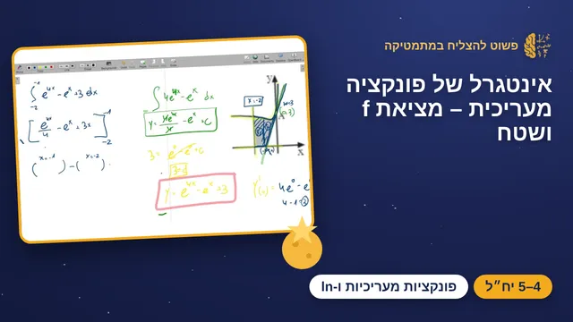
אינטגרל של פונקציה מעריכית – מציאת f ושטח אינטגרל של eˣ – פונקציה קדומה של e בחזקת ביטוי
אינטגרל של eˣ – פונקציה קדומה של e בחזקת ביטוי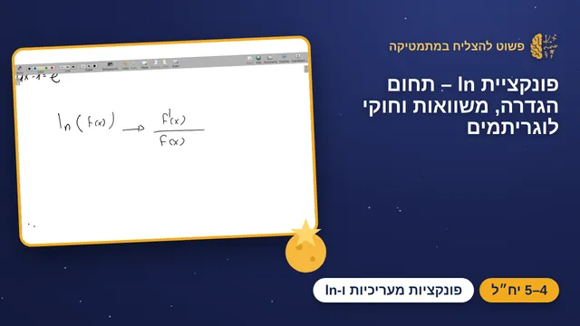
פונקציית ln – תחום הגדרה, משוואות וחוקי לוגריתמים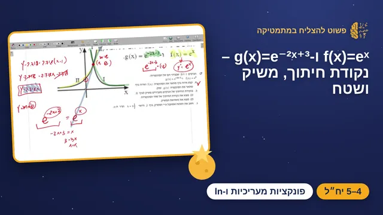
f(x)=eˣ ו-g(x)=e⁻²ˣ⁺³ – נקודת חיתוך, משיק ושטח חקירת הפונקציה f(x)=x³·eˣ
חקירת הפונקציה f(x)=x³·eˣ משוואות עם eˣ – גורם משותף והצבה
משוואות עם eˣ – גורם משותף והצבה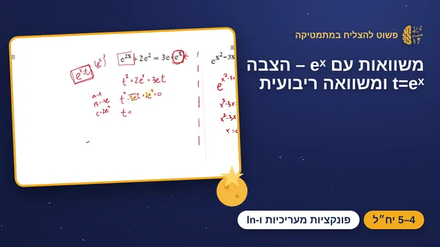
משוואות עם eˣ – הצבה t=eˣ ומשוואה ריבועית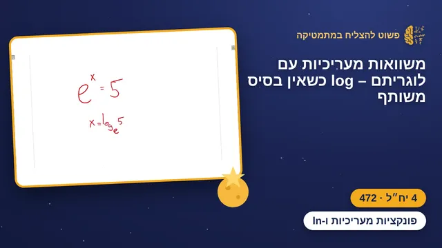
משוואות מעריכיות עם לוגריתם – log כשאין בסיס משותף חקירת fx=ax∕ln x−a עם פרמטר + g=1∕f
חקירת fx=ax∕ln x−a עם פרמטר + g=1∕f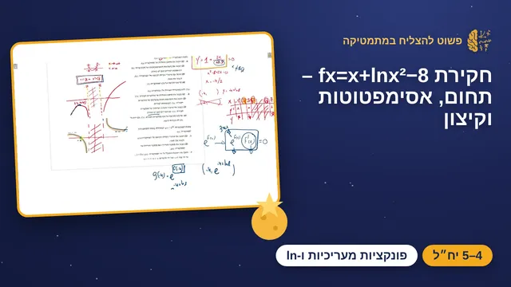
חקירת fx=x+lnx²−8 – תחום, אסימפטוטות וקיצון המספר e ולוגריתם – לפתור משוואה מעריכית
המספר e ולוגריתם – לפתור משוואה מעריכית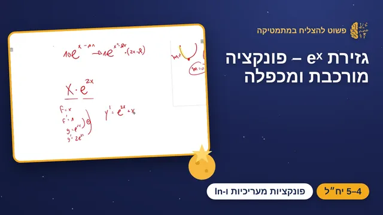
גזירת eˣ – פונקציה מורכבת ומכפלה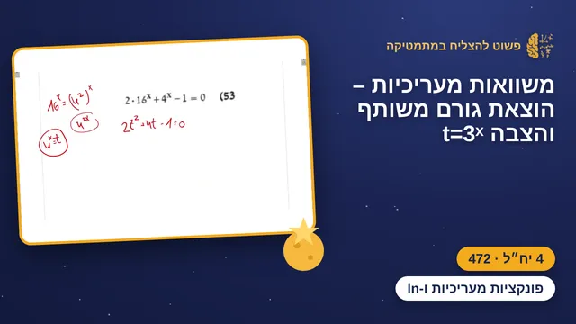
משוואות מעריכיות – הוצאת גורם משותף והצבה t=3ˣ משוואות מעריכיות – השוואת בסיסים
משוואות מעריכיות – השוואת בסיסים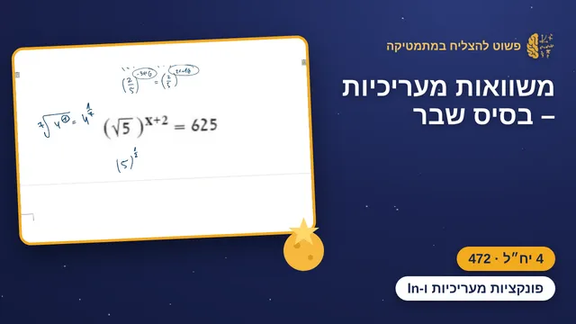
משוואות מעריכיות – בסיס שבר חקירת EX 472 שאלות בגרות יפה מאוד
חקירת EX 472 שאלות בגרות יפה מאוד חקירת EX שאלת בגרות נדירה ויפה וחכמה במיוחד
חקירת EX שאלת בגרות נדירה ויפה וחכמה במיוחד שאלת בגרות 472 EX קשר בין פונק לנגזרת כולל אינטגרל
שאלת בגרות 472 EX קשר בין פונק לנגזרת כולל אינטגרל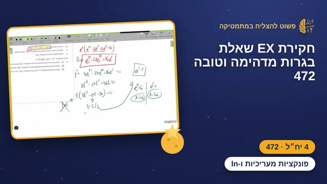
חקירת EX שאלת בגרות מדהימה וטובה 472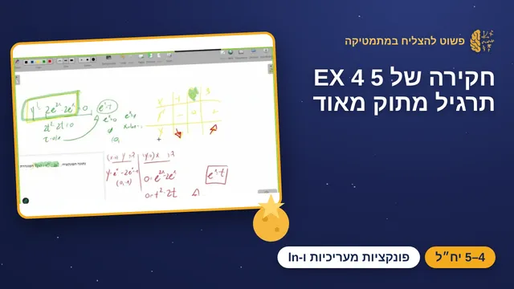
חקירה של EX 4 5 תרגיל מתוק מאוד עוד קצת טוב עם EX משחקי חזקות
עוד קצת טוב עם EX משחקי חזקות הסבר על פונקציית ln – איך גוזרים, איך פותרים משוואה והמשמעות שלה כיתה יב
הסבר על פונקציית ln – איך גוזרים, איך פותרים משוואה והמשמעות שלה כיתה יב תרגילי בגרות 472 תרגילי ln מדהימים 2
תרגילי בגרות 472 תרגילי ln מדהימים 2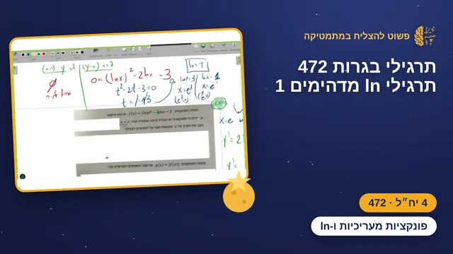
תרגילי בגרות 472 תרגילי ln מדהימים 1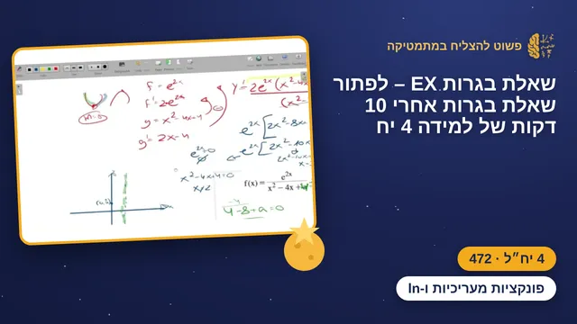
שאלת בגרות EX – לפתור שאלת בגרות אחרי 10 דקות של למידה 4 יח איך פותרים משוואת EX 4 5 יח כיתה יבפונקציית ln שאלת בגרות 482
איך פותרים משוואת EX 4 5 יח כיתה יבפונקציית ln שאלת בגרות 482 פונקציית ln שאלות מסכמות 482 2
פונקציית ln שאלות מסכמות 482 2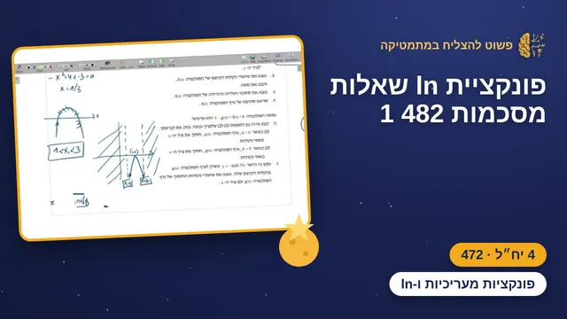
פונקציית ln שאלות מסכמות 482 1 פונקציית ln שאלות מסכמות 482 4
פונקציית ln שאלות מסכמות 482 4 פונקציית ln שאלות מסכמות 482 3
פונקציית ln שאלות מסכמות 482 3 פונקציית ln שאלה טילית כולל נגזרת מורכבת
פונקציית ln שאלה טילית כולל נגזרת מורכבת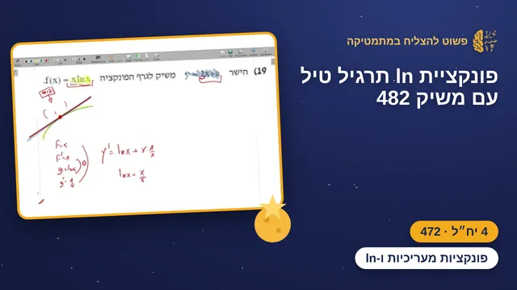
פונקציית ln תרגיל טיל עם משיק 482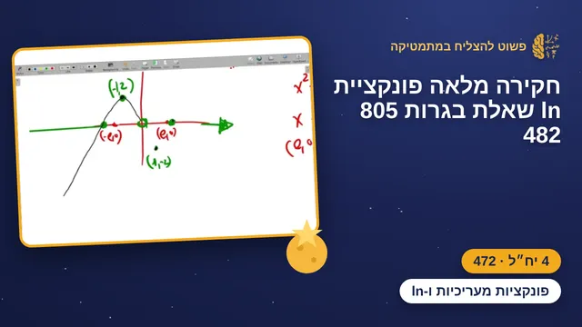
חקירה מלאה פונקציית ln שאלת בגרות 805 482 חקירה מלאה פונקציית ln
חקירה מלאה פונקציית ln תרגיל בגרות EX – רק לראות (ללא קול) 482
תרגיל בגרות EX – רק לראות (ללא קול) 482 פתירת משוואה ב-ln
פתירת משוואה ב-ln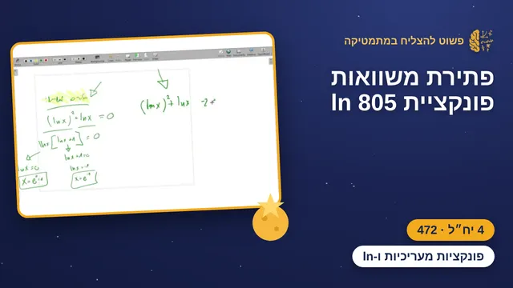
פתירת משוואות פונקציית ln 805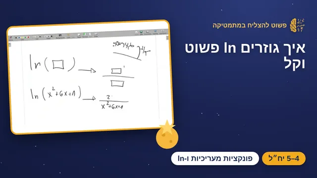
איך גוזרים ln פשוט וקל פונקציית ln – תחום הגדרה פשוט וקל
פונקציית ln – תחום הגדרה פשוט וקל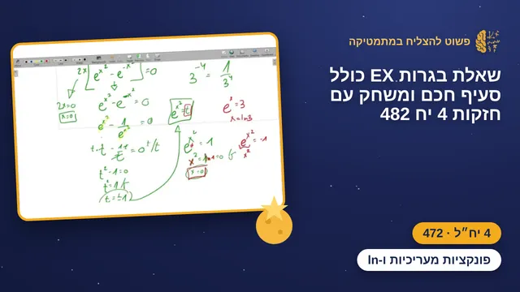
שאלת בגרות EX כולל סעיף חכם ומשחק עם חזקות 4 יח 482 חקירת EX שאלת בגרות – חקירה מלאה 4 יח 482
חקירת EX שאלת בגרות – חקירה מלאה 4 יח 482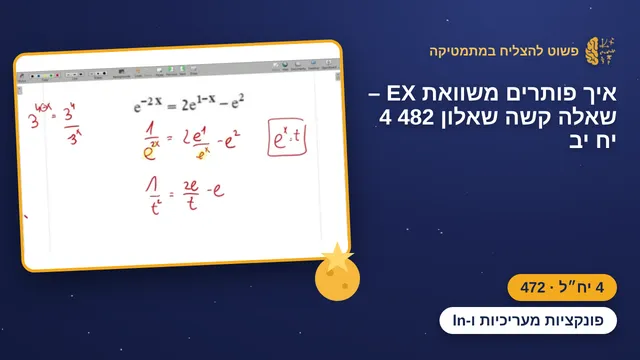
איך פותרים משוואת EX – שאלה קשה שאלון 482 4 יח יב איך גוזרים EX שאלון 482 פשוט וקל כיתה יב 4 יח
איך גוזרים EX שאלון 482 פשוט וקל כיתה יב 4 יח חקירת EX מדהימה כולל אסימפטוטות 482 4 יח כיתה יב
חקירת EX מדהימה כולל אסימפטוטות 482 4 יח כיתה יב פתירת משוואות עם חוקי חזקות – המשך יב 4 יח 482
פתירת משוואות עם חוקי חזקות – המשך יב 4 יח 482 חוקי חזקות יב 4 יח 482 – חוקים בסיסיים ואיך משחקים
חוקי חזקות יב 4 יח 482 – חוקים בסיסיים ואיך משחקים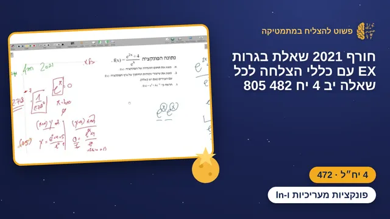
חורף 2021 שאלת בגרות EX עם כללי הצלחה לכל שאלה יב 4 יח 482 805482-805 EX – איך פותרים משוואה, חוקי הפונקציה ואיך גוזרים (הבסיס)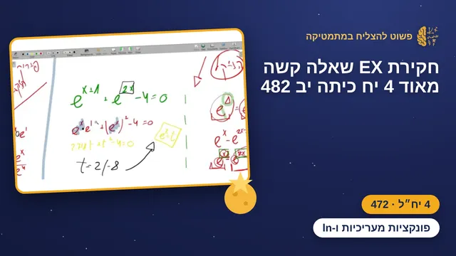
חקירת EX שאלה קשה מאוד 4 יח כיתה יב 482 חקירת EX 482 4 יח כיתה יבחקירת ln 482 שאלה איכותיתחקירת ln 482 4 יח כיתה יב
חקירת EX 482 4 יח כיתה יבחקירת ln 482 שאלה איכותיתחקירת ln 482 4 יח כיתה יב חקירת ln 482 שאלה טילית
חקירת ln 482 שאלה טילית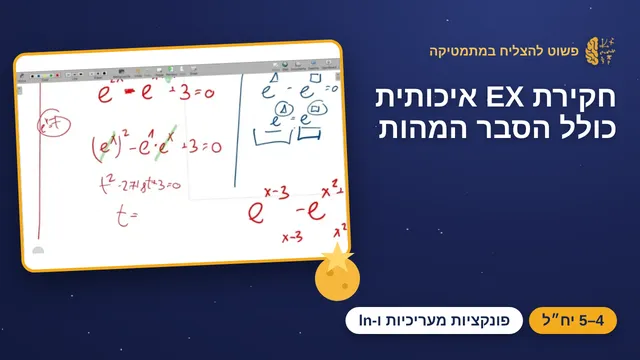
חקירת EX איכותית כולל הסבר המהות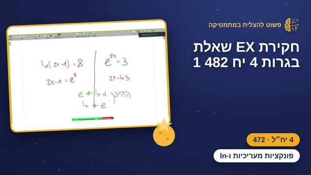
חקירת EX שאלת בגרות 4 יח 482 1 חקירת EX שאלת בגרות 4 יח 482 2
חקירת EX שאלת בגרות 4 יח 482 2 פונקציה מעריכית – שאלה ברמת בגרות 482 4 יח
פונקציה מעריכית – שאלה ברמת בגרות 482 4 יח פונקציות מעריכיות שאלות בגרות 482 805 4 יח 2פונקציות מעריכיות שאלות בגרות 482 805 4 יח 1חקירה לוגריתמית ln – שאלה ברמת בגרות 482 4 יח
פונקציות מעריכיות שאלות בגרות 482 805 4 יח 2פונקציות מעריכיות שאלות בגרות 482 805 4 יח 1חקירה לוגריתמית ln – שאלה ברמת בגרות 482 4 יח חקירת EX עם שטחים וסעיפים חכמים – 2 שאלות בגרות 482חורף 2023 שאלה 5 – חקירת ln 482
חקירת EX עם שטחים וסעיפים חכמים – 2 שאלות בגרות 482חורף 2023 שאלה 5 – חקירת ln 482 הסבר EX – כל החומרקיץ 2022 מועד ב – חקירת EX שאלה 4 482קיץ 2022 מועד א – חקירת EX שאלה 4 482
הסבר EX – כל החומרקיץ 2022 מועד ב – חקירת EX שאלה 4 482קיץ 2022 מועד א – חקירת EX שאלה 4 482 חקירת EX 482 – שאלה ברמה גבוהה עם סעיפים חכמים
חקירת EX 482 – שאלה ברמה גבוהה עם סעיפים חכמים חקירת ln עם סעיפים חכמים – שאלה ברמה גבוהה 482קיץ 2023 מועד ב שאלה 5 – חקירת ln 482חורף 2023 שאלה 5 – חקירת ln 482 שאלת בגרות
חקירת ln עם סעיפים חכמים – שאלה ברמה גבוהה 482קיץ 2023 מועד ב שאלה 5 – חקירת ln 482חורף 2023 שאלה 5 – חקירת ln 482 שאלת בגרות קיץ 2020 מועד א – חקירת EX 482קיץ 2021 מועד מיוחד – שאלה 4 EX 482
קיץ 2020 מועד א – חקירת EX 482קיץ 2021 מועד מיוחד – שאלה 4 EX 482 קיץ 2021 מועד מיוחד – שאלה 5 חקירת ln 482
קיץ 2021 מועד מיוחד – שאלה 5 חקירת ln 482 ln – פתרון שאלות בגרות
ln – פתרון שאלות בגרותאינטגרלים (12) לכל הסרטונים בנושא ←
 אינטגרל שנותן ln – ∫1∕ax+bdx
אינטגרל שנותן ln – ∫1∕ax+bdx איך גוזרים ואיך עושים אינטגרל לפונקציית EX פשוט וקל
איך גוזרים ואיך עושים אינטגרל לפונקציית EX פשוט וקל דוגמה חיה של אינטגרל מורכב של EXתרגיל בגרות EX כולל אינטגרל 482
דוגמה חיה של אינטגרל מורכב של EXתרגיל בגרות EX כולל אינטגרל 482 פונקציית EX שאלות עם אינטגרלים 1
פונקציית EX שאלות עם אינטגרלים 1 פונקציית EX שאלות עם אינטגרלים 2שאלת בגרות 482 EX עם אינטגרל וסעיף חכם 4 יחאינטגרלים תרגילים לדוגמה EX שטח יב 4 יח שאלון 482 1אינטגרלים תרגילים לדוגמה EX שטח יב 4 יח שאלון 482 2
פונקציית EX שאלות עם אינטגרלים 2שאלת בגרות 482 EX עם אינטגרל וסעיף חכם 4 יחאינטגרלים תרגילים לדוגמה EX שטח יב 4 יח שאלון 482 1אינטגרלים תרגילים לדוגמה EX שטח יב 4 יח שאלון 482 2 שאלת EX – חקירה עם אינטגרל 482 שאלת בגרות
שאלת EX – חקירה עם אינטגרל 482 שאלת בגרות חקירת ln עם אינטגרל כולל שאלת בגרות
חקירת ln עם אינטגרל כולל שאלת בגרותוקטורים (9) לכל הסרטונים בנושא ←
 וקטורים – פירמידה ריבועית, מכפלה סקלרית ונפח
וקטורים – פירמידה ריבועית, מכפלה סקלרית ונפח וקטורים – הבעת וקטורים במשולש ונקודה על קטע
וקטורים – הבעת וקטורים במשולש ונקודה על קטע 472 וקטורים שאלות בגרות 4472 וקטורים שאלות בגרות 3
472 וקטורים שאלות בגרות 4472 וקטורים שאלות בגרות 3 472 וקטורים שאלות בגרות 2
472 וקטורים שאלות בגרות 2 472 וקטורים שאלות בגרות 1482 שאלת בגרות מדהימה וקטורים
472 וקטורים שאלות בגרות 1482 שאלת בגרות מדהימה וקטורים וקטורים 472 שאלת בגרות טובה ויפה 4 יח כיתה יב
וקטורים 472 שאלת בגרות טובה ויפה 4 יח כיתה יב